소방설비기사(기계분야) (2019-09-21 기출문제)
1과목: 소방원론
1. 소화원리에 대한 설명으로 틀린 것은?
- 냉각소화 : 물의 증발잠열에 의해서 가연물의 온도를 저하시키는 소화방법
- 제거효과 : 가연성 가스의 분출화재 시 연료공급을 차단시키는 소화방법
- 질식소화 : 포소화약제 또는 불연성가스를 이용해서 공기 중의 산소공급을 차단하여 소화하는 방법
- 억제소화 : 불활성기체를 방출하여 연소범위 이하로 낮추어 소화하는 방법
(정답률: 67%)

2. 할로겐화합물 청정소화약제는 일반적으로 열을 받으면 할로겐족이 분해되어 가연물질의 연소 과정에서 발생하는 활성종과 화합하여 연소의 연쇄반응을 차단한다. 연쇄반응의 차단과 가장 거리가 먼 소화약제는?
- FC-3-1-10
- HFC-125
- IG-541
- FIC-1311
(정답률: 66%)
3. 물의 소화력을 증대시키기 위하여 첨가하는 첨가제 중 물의 유실을 방지하고 건물, 임야 등의 입체 면에 오랫동안 잔류하게 하기 위한 것은?
- 증점제
- 강화액
- 침투제
- 유화제
(정답률: 65%)
4. 화재 시 이산화탄소를 방출하여 산소농도를 13vol%로 낮추어 소화하기 위한 공기 중 이산화탄소의 농도는 약 몇 vol%인가?
- 9.5
- 25.8
- 38.1
- 61.5
(정답률: 70%)
5. 다음 중 인명구조기구에 속하지 않는 것은?
- 방열복
- 공기안전매트
- 공기호흡기
- 인공소생기
(정답률: 63%)
6. 다음 중 인화점이 가장 낮은 물질은?
- 산화프로필렌
- 이황화탄소
- 메틸알코올
- 등류
(정답률: 53%)
7. 화재의 지속시간 및 온도에 따라 목재건물과 내화건물을 비교했을 때, 목재건물의 화재성상으로 가장 적합한 것은?
- 저온장기형이다.
- 저온단기형이다.
- 고온장기형이다.
- 고온단기형이다.
(정답률: 73%)
8. 방화벽의 구조 기준 중 다음 ()안에 알맞은 것은?
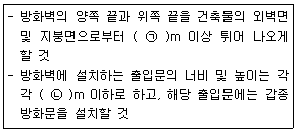
- ㉠ 0.3, ㉡ 2.5
- ㉠ 0.3, ㉡ 3.0
- ㉠ 0.5, ㉡ 2.5
- ㉠ 0.5, ㉡ 3.0
(정답률: 68%)
9. 에테르, 케톤, 에스테르, 알데히드, 카르복실산, 아민 등과 같은 가연성인 용매에 유효한 포소화약제는?
- 단백포
- 수성막포
- 불화단백포
- 내알코올포
(정답률: 58%)
10. 특정소방대상물(소방안전관리대상물은 제외)의 관계인과 소방안전관리대상물의 소방안전관리자의 업무가 아닌 것은?
- 화기 취급의 감독
- 자체소방대의 운용
- 소방 관련 시설의 유지ㆍ관리
- 피난시설, 방화구획 및 방화시설의 유지ㆍ관리
(정답률: 65%)
11. 화재의 유형별 특성에 관한 설명으로 옳은 것은?
- A급 화재는 무색으로 표시하며, 감전의 위험이 있으므로 주수소화를 엄금한다.
- B급 화재는 황색으로 표시하며, 질식소화를 통해 화재를 진압한다.
- C급 화재는 백색으로 표시하며, 가연성이 강한 금속의 화재이다.
- D급 화재는 청색으로 표시하며, 연소 후에 재를 남긴다.
(정답률: 76%)
12. 화재발생 시 인명피해 방지를 위한 건물로 적합한 것은?
- 피난설비가 없는 건물
- 특별피난계단의 구조로 된 건물
- 피난기구가 관리되고 있지 않은 건물
- 피난구 폐쇄 및 피난구유도등이 미비되어 있는 건물
(정답률: 76%)
13. 프로판가스의 연소범위(vol%)에 가장 가까운 것은?
- 9.8~28.4
- 2.5~81
- 4.0~75
- 2.1~9.5
(정답률: 55%)
14. 불포화 섬유지나 석탄에 자연발화를 일으키는 원인은?
- 분해열
- 산화열
- 발효열
- 중합열
(정답률: 67%)
15. CF3Br 소화약제의 명칭을 옳게 나타낸 것은?
- 하론 1011
- 하론 1211
- 하론 1301
- 하론 2402
(정답률: 76%)
16. 다음 중 전산실, 통신 기기실 등에서의 소화에 가장 적합한 것은?
- 스프링클러설비
- 옥내소화전설비
- 분말소화설비
- 할로겐화합물 및 불활성기체 소화설비
(정답률: 73%)
17. 가연물의 제거와 가장 관련이 없는 소화방법은?
- 유류화재 시 유류공급 밸브를 잠근다.
- 산불화재 시 나무를 잘라 없앤다.
- 팽창 진주암을 사용하여 진화한다.
- 가스화재 시 중간밸브를 잠근다.
(정답률: 77%)
18. 독성이 매우 높은 가스로서 석유제품, 유지(油脂) 등이 연소할 때 생선되는 알데히계통의 가스는?
- 시안화수소
- 암모니아
- 포스겐
- 아크롤레인
(정답률: 47%)
19. BLEVE 현상을 설명한 것으로 가장 옳은 것은?
- 물이 뜨거운 기름표면 아래에서 끓을 때 화재를 수반하지 않고 over flow 되는 현상
- 물이 연소유의 뜨거운 표면에 들어갈 때 발생되는 over flow 현상
- 탱크 바닥에 물과 기름의 에멀젼이 섞여있을 때 물의 비등으로 인하여 급격하게 over flow 되는 현상
- 탱크 주위 화재로 탱크 내 인화성 액체가 비등하고 가스부분의 압력이 상승하여 탱크가 파괴되고 폭발을 일으키는 현상
(정답률: 68%)
20. 화재강도(Fire Intensity)와 관계가 없는 것은?
- 가연물의 비표면적
- 발화원의 온도
- 화재실의 구조
- 가연물의 발열량
(정답률: 56%)
2과목: 소방유체역학
21. 아래 그림과 같이 두 개의 가벼운 공 사이로 빠른 기류를 불어 넣으면 두 개의 공은 어떻게 되겠는가?
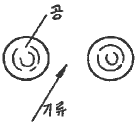
- 뉴턴의 법칙에 따라 벌어진다.
- 뉴턴의 법칙에 따라 가까워진다.
- 베르누이의 법칙에 따라 벌어진다.
- 베르누이의 법칙에 따라 가까워진다.
(정답률: 69%)
22. 다음 유체 기계드의 압력 상승이 일반적으로 큰 것부터 순서대로 바르게 나열한 것은?
- 압축기(compressor)＞블로어(blower)＞팬(fan)
- 블로어(blower)＞압축기(compressor)＞팬(fan)
- 팬(fan)＞블로어(blower)＞압축기(compressor)
- 팬(fan)＞압축기(compressor)＞블로어(blower)
(정답률: 64%)
23. 표면적이 같은 두 물체가 있다. 표면온도가 2000K인 물체가 내는 복사에너지는 표면온도가 1000K인 물체가 내는 복사에너지의 몇 배인가?
- 4
- 8
- 16
- 32
(정답률: 60%)
24. 이상기체의 폴리트로픽 변화 'PVn=일정‘에서 n=1인 경우 어느 변화에 속하는가? (단, P는 압력, V는 부피, n은 폴리트로프 지수를 나타낸다.)
- 단열변화
- 등온변화
- 정적변화
- 정압변화
(정답률: 55%)
25. 지름이 75mm인 관로 속에 평균 속도 4m/s로 흐르고 있을 때 유량(kg/s)은?
- 15.52
- 16.92
- 17.67
- 18.52
(정답률: 59%)
26. 초기에 비어 있는 체적이 0.1m3인 견고한 용기 안에 공기(이상기체)를 서서히 주입한다. 공기 1kg을 넣었을 때 용기 안의 온도가 300K가 되었다면 이 때 용기 안의 압력(kPa)은? (단, 공기의 기체상수는 0.287kJ/kgㆍK이다.)
- 287
- 300
- 448
- 861
(정답률: 51%)
27. 다음 중 Stokes의 법칙과 관계되는 점도계는?
- Ostwald 점도계
- 낙구식 점도계
- Saybolt 점도계
- 회전식 점도계
(정답률: 64%)
28. 피토관으로 파이프 중심선에서 흐르는 물의 유속을 측정할 때 피토관의 액주높이가 5.2m, 정압튜브의 액주높이가 4.2m를 나타낸다면 유속(m/s)은? (단, 속도계수(Cv)는 0.97이다.)
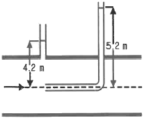
- 4.3
- 3.5
- 2.8
- 1.9
(정답률: 51%)
29. 그림의 역U자관 마노미터에서 압력 차(Px-Py)는 약 몇 Pa인가?
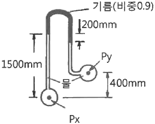
- 3215
- 4116
- 5045
- 6826
(정답률: 52%)
30. 지름이 다른 두 개의 피스톤이 그림과 같이 연결되어 있다. “1” 부분의 피스톤의 지름이 “2”부분의 2배일 때, 각 피스톤에 작용하는 힘 F1과 F2의 크기의 관계는?
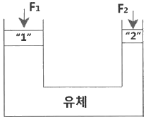
- F1=F2
- F1=2F2
- F1=4F2
- 4F1=F2
(정답률: 49%)
31. 용량 2000L의 탱크에 물을 가득 채운 소방차가 화재 현장에 출동하여 노즐압력 390kPa(계기압력), 노즐구경 2.5cm를 사용하여 방수한다면 소방차 내의 물이 전부 방수되는 데 걸리는 시간은?
- 약 2분 26초
- 약 3분 35초
- 약 4분 12초
- 약 5분 44초
(정답률: 48%)
32. 거리가 1000m 되는 곳에 안지름 20cm의 관을 통하여 물을 수평으로 수송하려 한다. 한 시간에 800m3를 보내기 위해 필요한 압력(kPa)는? (단, 관의 마찰계수는 0.03이다.)
- 1370
- 2010
- 3750
- 4580
(정답률: 47%)
33. 글로브 밸브에 의한 손실을 지름이 10cm이고 관 마찰계수가 0.025인 관의 길이로 환산하면 상당길이가 40m가 된다. 이 밸브의 부차적 손실계수는?
- 0.25
- 1
- 2.5
- 10
(정답률: 39%)
34. 체적탄성계수가 2×109Pa인 물의 체적을 3% 감소시키려면 몇 MPa의 압력을 가하여야 하는가?
- 25
- 30
- 45
- 60
(정답률: 51%)
35. 물질의 열역학적 변화에 대한 설명으로 틀린 것은?
- 마찰은 비가역성의 원인이 될 수 있다.
- 열역학 제1법칙은 에너지 보존에 대한 것이다.
- 이상기체는 이상기체 상태방정식을 만족한다.
- 가역단열과정은 엔트로피가 증가하는 과정이다.
(정답률: 54%)
36. 폭이 4m이고 반경이 1m인 그림과 같은 1/4원형 모양으로 설치된 수문 AB가 있다. 이 수문이 받는 수직방향 분력 Fv의 크기(N)는?
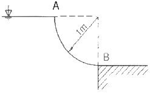
- 7613
- 9801
- 30787
- 123000
(정답률: 39%)
37. 다음 단위 중 3가지는 동일한 단위이고 나머지 하나는 다른 단위이다. 이 중 동일한 단위가 아닌 것은?
- J
- Nㆍs
- Paㆍm3
- kgㆍm2/s2
(정답률: 44%)
38. 전양정이 60m, 유량이 6m3/min, 효율이 60%인 펄프를 작동시키는 데 필요한 동력(kW)는?
- 44
- 60
- 98
- 117
(정답률: 61%)
39. 지름이 150mm인 원관에 비중이 0.85, 동점성계수가 1.33×10-4m2/s기름이 0.01m3/s의 유량으로 흐르고 있다. 이때 관 마찰계수는? (단, 임계 레이놀즈수는 2100이다.)
- 0.10
- 0.14
- 0.18
- 0.22
(정답률: 38%)
40. 검사체적(control volume)에 대한 운동량방정식(momentum equation)과 가장 관계가 깊은 법칙은?
- 열역학 제2법칙
- 질량보존의 법칙
- 에너지보존의 법칙
- 뉴턴(Newton)의 법칙
(정답률: 52%)
3과목: 소방관계법규
41. 소방안전관리자 및 소방안전관리보조자에 대한 실무교육의 교육대상, 교육일정 등 실무교육에 필요한 계획을 수립하여 매년 누구의 승인을 얻어 교육을 실시하는가?
- 한국소방안전원장
- 소방본부장
- 소방청장
- 시ㆍ도지사
(정답률: 50%)
42. 화재경계지구로 지정할 수 있는 대상이 아닌 것은?
- 시장지역
- 소방출동로가 있는 지역
- 공장ㆍ창고가 밀집한 지역
- 목조건물이 밀집한 지역
(정답률: 71%)
43. 화재예방, 소방시설 설치ㆍ유지 및 안전관리에 관한 법령상 정당한 사유 없이 소방특별조사결과에 따른 조치명령을 위반한자에 대한 벌칙으로 옳은 것은?
- 100만원 이하의 벌금
- 300만원 이하의 벌금
- 1년 이하의 징역 또는 1천만원 이하의 벌금
- 3년 이하의 징역 또는 3천만원 이하의 벌금
(정답률: 29%)
44. 다음 중 한국소방안전원의 업무에 해당하지 않는 것은?
- 소방용 기계ㆍ기구의 형식승인
- 소방업무에 관하여 행정기관이 위탁하는 업무
- 화재예방과 안전관리의식 고취를 위한 대국민 홍보
- 소방기술과 안전관리에 관한 교육, 조사ㆍ연구 및 각종 간행물 발간
(정답률: 63%)
45. 소방기본법상 소방대의 구성원에 속하지 않는 자는?
- 소방공무원법에 따른 소방공무원
- 의용소방대 설치 및 운영에 관한 법률에 따른 의용소방대원
- 위험물안전관리법에 따른 자체소방대원
- 의무소방대설치법에 따라 임용된 의무소방원
(정답률: 65%)
46. 위험물안전관리법령상 제조소등이 아닌 장소에서 지정수량 이상의 위험물을 취급할 수 있는 기준 중 다음 ()안에 알맞은 것은?
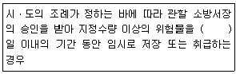
- 15
- 30
- 60
- 90
(정답률: 61%)
47. 화재예방, 소방시설 설치ㆍ유지 및 안전관리에 관한 법령상 소방대상물의 개수ㆍ이전ㆍ제거, 사용의 금지 또는 제한, 사용폐쇄, 공사의 정지 또는 중지, 그 밖의 필요한 조치로 인하여 손실을 받은 자가 손실보상청구서에 첨부하여야 하는 서류로 틀린 것은?
- 손실보상 합의서
- 손실을 증명할 수 있는 사진
- 손실을 증명할 수 있는 증빙자료
- 소방대상물의 관계인임을 증명할 수 있는 서류(건축물대장은 제외)
(정답률: 61%)
48. 화재예방, 소방시설 설치ㆍ유지 및 안전관리에 관한 법령상 소방청장, 소방본부장 또는 소방서장은 관할구역에 있는 소방대상물에 대하여 소방특별조사를 실시할 수 있다. 소방특별조사 대상과 거리가 먼 것은? (단, 개인 주거에 대하여는 관계인의 승낙을 득한 경우이다.)
- 화재경계지구에 대한 소방특별조사 등 다른 법률에서 소방특별조사를 실시하도록 한 경우
- 관계인이 법령에 따라 실시하는 소방시설등, 방화시설, 피난시설 등에 대한 자체점검 등이 불성실하거나 불완전하다고 인정되는 경우
- 화재가 발생할 우려는 없으나 소방대상물의 정기점검이 필요한 경우
- 국가적 행사 등 주요행사가 개최되는 장소에 대하여 소방안전관리 실태를 점검할 필요가 있는 경우
(정답률: 67%)
49. 다음 조건을 참고하여 숙박시설이 있는 특정소방대상물의 수용인원 산정 수로 옳은 것은?
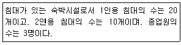
- 33명
- 40명
- 43명
- 46명
(정답률: 69%)
50. 다음 중 상주 공사감리를 하여야 할 대상의 기준으로 옳은 것은?
- 지하층을 포함한 층수가 16층 이상으로서 300세대 이상인 아파트에 대한 소방시설의 공사
- 지하층을 포함한 층수가 16층 이상으로서 500세대 이상인 아파트에 대한 소방시설의 공사
- 지하층을 포함하지 않은 층수가 16층 이상으로서 300세대 이상인 아파트에 대한 소방시설의 공사
- 지하층을 포함하지 않은 층수가 16층 이상으로서 500세대 이상인 아파트에 대한 소방시설의 공사
(정답률: 45%)
51. 다음 중 화재원인조사의 종류에 해당하지 않는 것은?
- 발화원인 조사
- 피난상황 조사
- 인명피해 조사
- 연소상황 조사
(정답률: 55%)
52. 화재예방, 소방시설 설치ㆍ유지 및 안전관리에 관한 법령상 간이스프링클러설비를 설치하여야 하는 특정소방대상물의 기준으로 옳은 것은?
- 근린생활시설로 사용하는 부분의 바닥면적 합계가 1000m2 이상인 것은 모든 층
- 교육연구시설 내에 있는 합숙소로서 연면적 500m2 이상인 것
- 정신병원과 의료재활시설을 제외한 요양병원으로 사용되는 바닥면적의 합계가 300m2 이상 600m2 미만인 시설
- 정신의료기관 또는 의료재활시설로 사용되는 바닥면적의 합계가 600m2 미만인 시설
(정답률: 41%)
53. 화재예방, 소방시설 설치ㆍ유지 및 안전관리에 관한 법령상 소방시설 등의 자체점검 시 점검인력 배치기준 중 종합정밀 점검에 대한 점검인력 1단위가 하루 동안 점검할 수 있는 특정소방대상물의 연면적 기분으로 옳은 것은? (단, 보조 인력을 추가하는 경우는 제외한다.)
- 3500m2
- 7000m2
- 10000m2
- 12000m2
(정답률: 61%)
54. 소방본부장 또는 소방서장은 화재경계지구안의 관계인에 대하여 소방상 필요한 훈련 및 교육은 연 몇 회 이상 실시할 수 있는가?
- 1
- 2
- 3
- 4
(정답률: 62%)
55. 제조소등의 위치ㆍ구조 또는 설비의 변경 없이 당해 제조소등에서 저장하거나 취급하는 위험물의 품명ㆍ수량 또는 지정수량의 배수를 변경하고자 할 때는 누구에게 신고해야 하는가?
- 국무총리
- 시ㆍ도지사
- 관할소방서장
- 행정안전부장관
(정답률: 64%)
56. 항공기격납고는 특정소방대상물 중 어느 시설에 해당하는가?
- 위험물 저장 및 처리 시설
- 항공기 및 자동차 관련 시설
- 창고시설
- 업무시설
(정답률: 67%)
57. 소방기본법령상 국고보조 대상사업의 범위 중 소방활동장비와 설비에 해당하지 않는 것은?
- 소방자동차
- 소방헬리콥터 및 소방정
- 소화용수설비 및 피난구조설비
- 방화복 등 소방활동에 필요한 소방장비
(정답률: 64%)
58. 위험물안전관리법령상 제조소등의 관계인은 위험물의 안전관리에 관한 직무를 수행하게 하기 위하여 제조소등마다 위험물의 취급에 관한 자격이 있는 자를 위험물안전관리자로 선임하여야 한다. 이 경우 제조소등의 관계인이 지켜야 할 기준으로 틀린 것은?
- 제조소등의 관계인은 안전관리자를 해임하거나 안전관리자가 퇴직한 때에는 해임하거나 퇴직한 날부터 15일 이내에 다시 안전관리자를 선임하여야한다.
- 제조소등의 관계인이 안전관리자를 선임한 경우에는 선임한 날부터 14일 이내에 소방본부장 또는 소방서장에게 신고하여야 한다.
- 제조소등의 관계인은 안전관리자가 여행ㆍ질병 그 밖의 사유로 인하여 일시적으로 직무를 수행할 수 없는 경우에는 국가기술자격법에 따른 위험물의 취급에 관한 자격취득자 또는 위험물안전에 관한 기본지식과 경험이 있는 자를 대리자로 지정하여 그 직무를 대행하게 하여야 한다. 이 경우 대행하는 기간은 30일을 초과할 수 없다.
- 안전관리자는 위험물을 취급하는 작업을 하는 때에는 작업자에게 안전관리에 관한 필요한 지시를 하는 등 위험물의 취급에 관한 안전관리와 감독을 하여야 하고, 제조소등의 관계인은 안전관리자의 위험물 안전관리에 관한 의견을 존중하고 그 권고에 따라야 한다.
(정답률: 65%)
59. 소방대상물의 방염 등과 관련하여 방염성능기준은 무엇으로 정하는가?
- 대통령령
- 행정안전부령
- 소방청훈령
- 소방청예규
(정답률: 57%)
60. 제6류 위험물에 속하지 않는 것은?
- 질산
- 과산화수소
- 과염소산
- 과염소산염류
(정답률: 60%)
4과목: 소방기계시설의 구조 및 원리
61. 이산화탄소소화설비의 기동장치에 대한 기준으로 틀린 것은?
- 자동식 기동장치에는 수동으로도 기동할 수 있는 구조이어야 한다.
- 가스압력식 기동장치에서 기동용가스용기 및 해당용기에 사용하는 밸브는 20 MPa이상의 압력에견딜 수 있어야 한다.
- 수동식 기동장치의 조작부는 바닥으로부터 높이 0.8m 이상 1.5m 이하의 위치에 설치한다.
- 전기식 기동장치로서 7병 이상의 저장용기를 동시에 개방하는 설비는 2병 이상의 저장용기에 전자 개방밸브를 부착해야 한다.
(정답률: 62%)
62. 천장의 기울기가 10분의 1을 초과할 경우에 가지관의 최상부에 설치되는 톱날지붕의 스프링클러헤드는 천장의 최상부로부터의 수직거리가 몇 cm 이하가 되도록 설치하여야 하는가?
- 50
- 70
- 90
- 120
(정답률: 54%)
63. 주요 구조부가 내화구조이고 건널 복도가 설치된 층의 피난기구 수의 설치 감소 방법으로 적합한 것은?
- 피난기구를 설치하지 아니할 수 있다.
- 피난기구의 수에서 1/2을 감소한 수로 한다.
- 원래의 수에서 건널 복도 수를 더한 수로 한다.
- 피난기구의 수에서 해당 건널 복도의 수의 2배의 수를 뺀 수로 한다.
(정답률: 60%)
64. 제연설비의 설치장소에 따른 제연구역의 구획 기준으로 틀린 것은?
- 거실과 통로는 상호 제연구획 할 것
- 하나의 제연구역의 면적은 600m2 이내로 할 것
- 하나의 제연구역은 직경 60m 원내에 들어갈 수 있을 것
- 하나의 제연구역은 2개 이상 층에 미치지 아니하도록 할 것
(정답률: 62%)
65. 물분무소화설비의 가압송수장치로 압력수조의 필요압력을 산출할 때 필요한 것이 아닌 것은?
- 낙차의 환산수두압
- 물분무헤드의 설계압력
- 배관의 마찰손실 수두압
- 소방용 호스의 마찰손실 수두압
(정답률: 59%)
66. 주거용 주방자동소화장치의 설치기준으로 틀린 것은?
- 감지부는 형식승인 받은 유효한 높이 및 위치에 설치해야 한다.
- 소화약제 방출구는 환기구의 청소부분과 분리되어 있어야 한다.
- 가스차단 장치는 상시 확인 및 점검이 가능하도록 설치해야 한다.
- 탐지부는 수신부와 분리하여 설치하되, 공기보다 무거운 가스를 사용하는 장소에는 바닥면으로부터 0.2m 이하의 위치에 설치해야 한다.
(정답률: 71%)
67. 물분무소화설비의 소화작용이 아닌 것은?
- 부촉매작용
- 냉각작용
- 질식작용
- 희석작용
(정답률: 68%)
68. 소화용수설비에서 소화수조의 소요수량이 20m2이상 40m2 미만인 경우에 설치하여야 하는 채수구의 개수는?
- 1개
- 2개
- 3개
- 4개
(정답률: 57%)
69. 분말소화설비의 분말소화약제 1kg당 저장용기의 내용적 기준으로 틀린 것은?
- 제1종 분말 : 0.8L
- 제2종 분말 : 1.0L
- 제3종 분말 : 1.0L
- 제4종 분말 : 1.8L
(정답률: 66%)
70. 다음은 상수도소화용수설비의 설치기준에 관한 설명이다. () 안에 들어갈 내용으로 알맞은 것은?
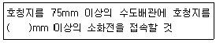
- 50
- 80
- 100
- 125
(정답률: 75%)
71. 특별피난계단의 계단실 및 부속실 제연설비의 안전기준에 대한 내용으로 틀린 것은?
- 제연구역과 옥내와의 사이에 유지하여야 하는 최소 차압은 40Pa 이상으로 하여야 한다.
- 제연설비가 가동되었을 경우 출입문의 개방에 필요한 힘은 110N 이상으로 하여야 한다.
- 계단실과 부속실을 동시에 제연하는 경우 부속실의 기압은 계단실과 같게 하거나 부속실과 계단실의 압력차이가 5Pa 이하가 되도록 하여야 한다.
- 계단실 및 그 부속실을 동시에 제연하거나 또는 계단실만 단독으로 제연할 때의 방연풍속은 0.5m/s 이상이어야 한다.
(정답률: 56%)
72. 스프링클러설비의 가압송수장치의 정격토출압력은 하나의 헤드선단에 얼마의 방수압력이 될 수 있는 크기이어야 하는가?
- 0.01 MPa 이상 0.⑤ MPa 이하
- 0.1 MPa 이상 1.2 MPa 이하
- 1.5 MPa 이상 2.0 MPa 이하
- 2.5 MPa 이상 3.3 MPa 이하
(정답률: 58%)
73. 스프링클러설비의 교차배관에서 분기되는 지점을 기점으로 한쪽 가지배관에 설치되는 헤드는 몇 개 이하로 설치하여야 하는가? (단, 수리학적 배관방식의 경우는 제외한다.)
- 8
- 10
- 12
- 18
(정답률: 72%)
74. 지상으로부터 높이 30m가 되는 창문에서 구조대용 유도 로프의 모래주머니를 자연낙하 시킨 경우 지상에 도달할 때까지 걸리는 시간(초)은?
- 2.5
- 5
- 7.5
- 10
(정답률: 60%)
75. 포소화설비의 자동식 기동장치에서 폐쇄형스프링클러헤드를 사용하는 경우의 설치기준에 대한 설명이다. ㉠~㉢의 내용으로 옳은 것은?
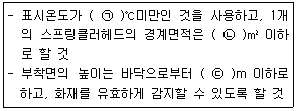
- ㉠ 68, ㉡ 20, ㉢ 5
- ㉠ 68, ㉡ 30, ㉢ 7
- ㉠ 79, ㉡ 20, ㉢ 5
- ㉠ 79, ㉡ 30, ㉢ 7
(정답률: 66%)
76. 다음은 포소화설비에서 배관 등 설치기준에 관한 내용이다. ㉠~㉢ 안에 들어갈 내용으로 옳은 것은?
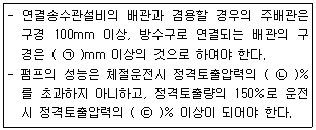
- ㉠ 40, ㉡ 120, ㉢ 65
- ㉠ 40, ㉡ 120, ㉢ 75
- ㉠ 65, ㉡ 140, ㉢ 65
- ㉠ 65, ㉡ 140, ㉢ 75
(정답률: 55%)
77. 옥내소화전이 하나의 층에는 6개, 또 다른 층에는 3개, 나머지 모든 층에는 4개씩 설치되어 있다. 수원의 최소 수량(m3) 기준은?(관련 규정 개정전 문제로 여기서는 기존 정답인 3번을 누르면 정답 처리됩니다. 자세한 내용은 해설을 참고하세요.)
- 7.8
- 10.4
- 13
- 15.6
(정답률: 59%)
78. 스프링클러설비의 누수로 인한 유수검지장치의 오작동을 방지하기 위한 목적으로 설치하는 것은?
- 솔레노이드 밸브
- 리타딩 챔버
- 물올림 장치
- 성능시험배관
(정답률: 74%)
79. 전역방출방식 분말 소화설비에서 방호구역의 개구부에 자동폐쇄장치를 설치하지 아니한 경우, 개구부의 면적 1m2에 대한 분말소화약제의 가산량으로 잘못 연결된 것은?
- 제1종 분말 – 4.5kg
- 제2종 분말 – 2.7kg
- 제3종 분말 – 2.5kg
- 제4종 분말 – 1.8kg
(정답률: 56%)
80. 체적 100m3의 면화류 창고에 전역방출 방식의 이산화탄소 소화설비를 설치하는 경우에 소화약제는 몇 kg 이상 저장하여야 하는가? (단, 방호구역의 개구부에 자동폐쇄장치가 부착되어 있다.)
- 12
- 27
- 120
- 270
(정답률: 42%)
억제소화는 연소 반응에 필요한 산소를 차단하여 연소를 억제하는 방법입니다. 이를 위해 불활성기체인 이산화탄소(CO2)나 질소(N2) 등을 방출하여 연소 범위 이하로 낮추어 소화합니다. 이 방법은 가스나 액체 등의 화재에 효과적이며, 화재 발생 시 빠르게 대처할 수 있습니다.